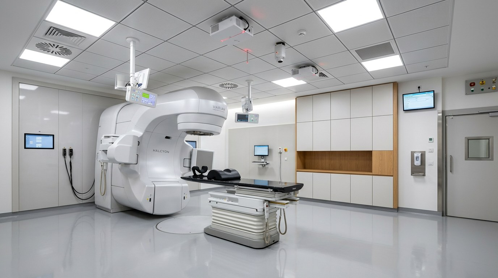
The Radiotherapy Department is a clinical radiation oncology unit delivering external beam radiation therapy (EBRT) to oncology patients using medical linear accelerators (LINACs). Within the Anti-Cancer Centre Constantine, this department forms the primary treatment modality for solid tumours, operating in close functional relationship with the Nuclear Medicine Department, Oncology Consultation, and Medical Imaging.
| Position in Hospital | Functional Relationship | Criticality |
|---|---|---|
| Nuclear Medicine / FDG-18 Unit | PET-CT imaging feeds radiotherapy target volumes (RT planning) | Direct |
| Oncology Consultation | Patient referral, treatment prescription, multi-disciplinary team review | Direct |
| Medical Imaging (CT / MRI) | CT Simulation for treatment planning; MRI for soft tissue delineation | Direct |
| Haematology / Chemotherapy | Combined chemo-radiation protocols; shared patient pathway | Close |
| Pharmacy | Radiosensitiser and supportive drug supply | Close |
| Patient Transport / Circulation | Daily fractionated treatment — patient access multiple times/week | Critical |
| Emergency Services | Emergency beam termination procedures; patient emergency exit | Critical |
External beam radiotherapy delivers precisely shaped high-energy photon beams to tumour targets whilst minimising dose to surrounding healthy tissue. The treatment chain spans clinical prescription through beam delivery, supported by image guidance at each fraction.
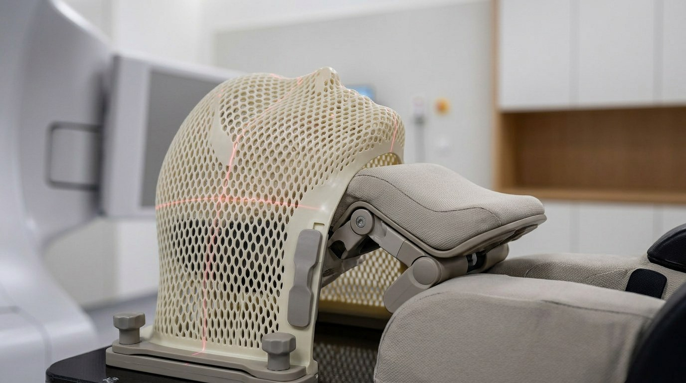
Varian Halcyon — Ring-Gantry Treatment Head
Modern Radiotherapy Vault — Treatment Position
Two LINAC platforms have been evaluated for the Anti-Cancer Centre Constantine. The comparative analysis below is extracted from the Technical Comparative Analysis Report (May 2024) and serves as the primary briefing reference for facility spatial requirements.
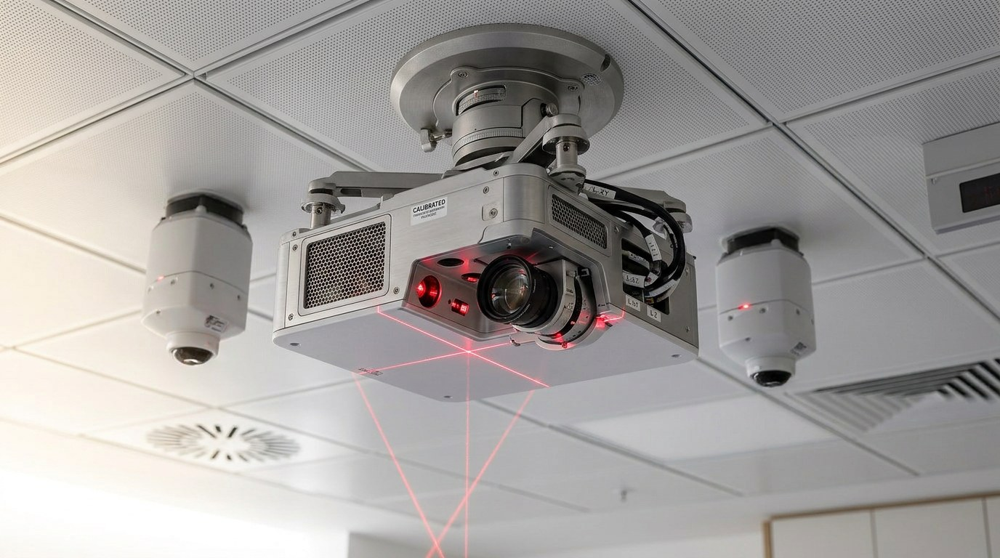
LINAC Control Room — Console & Monitoring Station
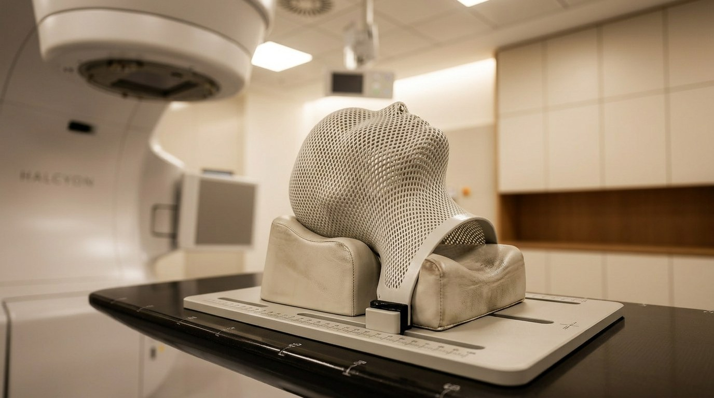
Ring-Gantry Detail — Integrated OBI Imaging System
| Room | Code | Zone | Occupancy | Indicative Area (m²) |
|---|---|---|---|---|
| Treatment Vault — LINAC Bunker | RT-01 | Controlled | Patient + RT Therapist | 35–45 |
| Control Room | RT-02 | Supervised | 2–3 RT Therapists | 18–24 |
| Patient Waiting (Pre-Treatment) | RT-03 | Public | 6–10 Patients | 20–28 |
| CT Simulation Room | RT-04 | Supervised | Patient + 2 Staff | 28–35 |
| Treatment Planning Room | RT-05 | Clinical | 2–4 Dosimetrists | 18–24 |
| Medical Physics / QA Room | RT-06 | Clinical | 1–2 Physicists | 16–20 |
| Mould Room / Immobilisation Lab | RT-07 | Clinical | 1–2 Therapists | 14–18 |
| Patient Changing / Preparation | RT-08 | Public | 2–4 Patients | 10–14 |
| Staff Room / Dosimetry Office | RT-09 | Clinical | 3–5 Staff | 14–18 |
| From | To | Relationship Type | Observation |
|---|---|---|---|
| Treatment Vault (RT-01) | Control Room (RT-02) | Direct — adjacent | Shielded observation window + intercom mandatory |
| Treatment Vault (RT-01) | Maze / Entry | Direct — shielded | Maze or direct-shielded door — per physicist design |
| Control Room (RT-02) | CT Simulation (RT-04) | Close — same floor | Shared console access preferred |
| Patient Waiting (RT-03) | Treatment Vault Entry | Direct | Patient flow — no staff cross-circulation |
| CT Simulation (RT-04) | Treatment Planning (RT-05) | Direct — data link | DICOM network — same oncology domain |
| Treatment Planning (RT-05) | Physics QA (RT-06) | Direct | Plan verification before beam delivery |
| Mould Room (RT-07) | Treatment Vault (RT-01) | Close | Immobilisation devices transferred to vault |
| Changing (RT-08) | Patient Waiting (RT-03) | Direct | Patient-side flow — gowned patient to vault |
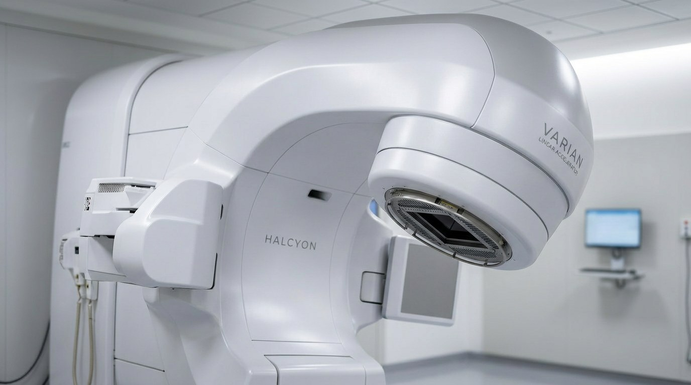
Treatment Vault — Patient Couch & Gantry Position
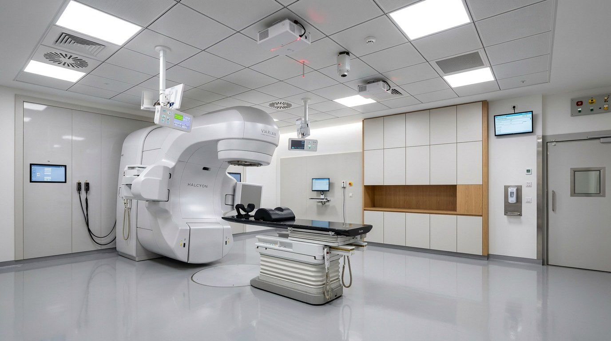
Modern LINAC Room — Spatial Configuration
| Standard / Document | Organisation | Scope |
|---|---|---|
| IEC 60601-2-1 | IEC | Medical electrical equipment — particular requirements for linacs |
| IEC 60976 | IEC | Functional performance of medical electron accelerators |
| IEC 60977 | IEC | Guidelines for functional performance of linacs |
| IEC 61217 | IEC | Coordinates, motions and scales — radiotherapy equipment |
| NCRP Report No. 151 | NCRP | Structural shielding design methodology — radiotherapy facilities |
| IAEA Safety Reports Series No. 47 | IAEA | Radiation protection in design of radiotherapy facilities |
| IAEA-TECDOC-1040 | IAEA | Design and implementation of a radiotherapy programme |
| ANSI/ESD S20.20 | ANSI | ESD control programme — flooring specification for linac vaults |
| ISO 4463-1 | ISO | Measurement and setting out — dimensional tolerances for vault construction |
| FANR Regulation | FANR UAE | Federal Authority for Nuclear Regulation — vault shielding approval (UAE reference) |
| CRNA Algeria | Algeria | Centre de Radioprotection et de Nucléaire d'Algérie — regulatory authority |
| Elekta Site Planning Doc 1008405 05 | Elekta AB | Elekta Harmony site planning and construction information |
| Varian Halcyon PPG P1029751-02 | Varian / Siemens | Halcyon Product Planning Guide — vault and facility requirements |
Nine Room Data Sheets covering the complete Radiotherapy Department. Each sheet follows the standard four-part FTB-RDS structure: General Information, Appearance & Finishes, Furniture & Utilities, and Equipment & Networks.
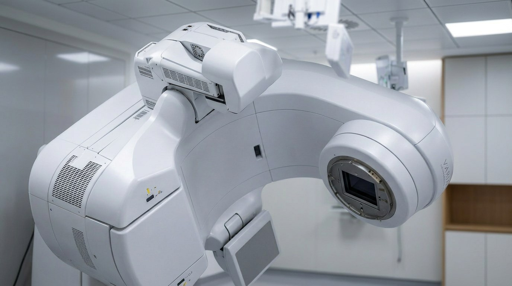
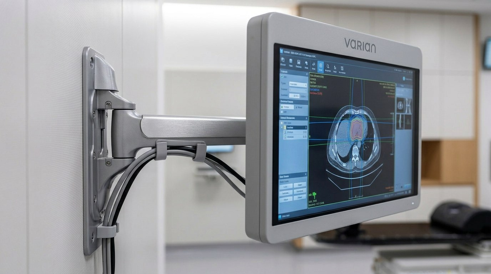
| Field | Data |
|---|---|
| Room Name | Treatment Vault — Linear Accelerator Bunker |
| Room Code | RT-01 |
| Service | Radiotherapy |
| Sub-Service | External Beam Radiation Therapy (EBRT) |
| Indicative Area | 35–45 m² (Elekta) | 32–38 m² (Halcyon) — excluding maze |
| Ceiling Height | ≥ 3,200 mm (Elekta) | ≥ 2,740 mm (Halcyon) |
| Service Hours | 07:00–20:00 — 5 days/week (extendable per patient load) |
| Occupation | 1 Patient on couch + 1–2 RT Therapists (setup only — staff exit before beam) |
| Staffing | RT Therapist (×2 minimum per session) |
| Description | Primary radiation treatment space housing the LINAC gantry, treatment couch, on-board imaging system, and associated cable/cooling infrastructure. Shielded vault with maze or direct-door entry. No staff present during beam-on. |
| Acoustic Insulation | Concrete shielding provides inherent acoustic mass. Intercom system mandatory between vault and control room. |
| Strong Relationships | RT-02 Control Room (direct adjacent) — RT-03 Patient Waiting (vault entry) |
| Element | Specification | Observation |
|---|---|---|
| Floor | ESD-safe vinyl sheet / VCT — static dissipative 1 MΩ–1,000 MΩ (ANSI/ESD S20.20) | No flooring in hatched areas either side of floor pit |
| Walls | Painted concrete — minimum 30 MN/m² (28-day cube strength). All penetrations sealed. | All concrete sealed before equipment delivery |
| Ceiling | Lay-in acoustical tile 600×1,200 mm or 600×600 mm | Photo-electric or heat detectors preferred — NOT ionisation type |
| Fascia Wall | Elekta: total 4,000 mm width — Elekta panel + client finish panel. Halcyon: vendor-defined fascia. | Non-structural — shielded concrete behind fascia |
| Lighting | Dimmable LED — patient positioning lighting separate from working light | No fluorescent near warning lights — interference risk |
| Warning Lights | BEAM ON (mandatory) + X-RAY ON (mandatory) above entry door. BEAM OFF optional. | Max 60W incandescent or LED — no fluorescent |
| Fire Sprinklers | Discouraged inside vault. If required: dry pre-action system, high-temperature heads, not above equipment. | Coordinate with fire engineer and equipment vendor |
| Doors | Shielded primary door (motorised, interlocked) or shielded maze entry | Interlock: primary 48VDC NC + secondary 24VDC NC — both must operate within 500ms |
| Description | Category | Qty | Observation |
|---|---|---|---|
| LINAC Treatment Couch (6-DOF) | Fixed Equipment | 1 | Supplied by equipment vendor — Halcyon Exact Couch / Elekta Precise Couch |
| Immobilisation Device Storage | Custom Millwork | 1 set | Custom cabinetry for masks, cushions, bolus materials |
| Laser Positioning System | Fixed Equipment | 3 axes | Ceiling + side wall lasers for patient setup — vendor-specified positions |
| CCTV Camera | Fixed Equipment | 2 min. | Patient monitoring during beam-on — feed to control room |
| Intercom Speaker/Mic | Fixed Equipment | 1 set | Two-way communication vault ↔ control room |
| Emergency Off (EMO) Switch | Safety Equipment | 3+ | Allen-Bradley 800T-FX6AV or equivalent — at door, in room, at console |
| Fire Extinguisher | Safety Equipment | 1 | Type C — inside treatment room |
| Description | QTY | ELE | HVAC / Cooling | GAS / DRN | DATA / BMS | Power Observation |
|---|---|---|---|---|---|---|
| LINAC Gantry + Stand | 1 | Yes | 7 kW chilled water | Drain stub | DICOM / Oncology LAN | 16–18 kVA beam-on (Halcyon) / 3-phase 380V (Elekta) |
| Treatment Couch (6-DOF) | 1 | Yes | No | No | BMS interlock | Vendor cable — via floor pit |
| On-Board Imager (kV OBI) | 1 | Integrated | No | No | DICOM imaging | Integrated with gantry power |
| MV EPID (portal imager) | 1 | Integrated | No | No | DICOM dosimetry | Integrated with gantry |
| Laser Positioning (3-axis) | 1 set | Yes | No | No | BMS | Low voltage — wall/ceiling conduit |
| CCTV System | 2 cam | Yes | No | No | CCTV LAN to control room | PoE — CAT6 to control room |
| Chilled Water Supply/Return | 1 pair | No | Closed-loop chiller | DN25 FNPT | No | Isolation valves + FNPT — rear of Stand |
| HVAC Supply/Extract | 1 sys | Yes | 4–6 ACH / 16–27°C | No | BMS | Ozone clearance — positive pressure vault |
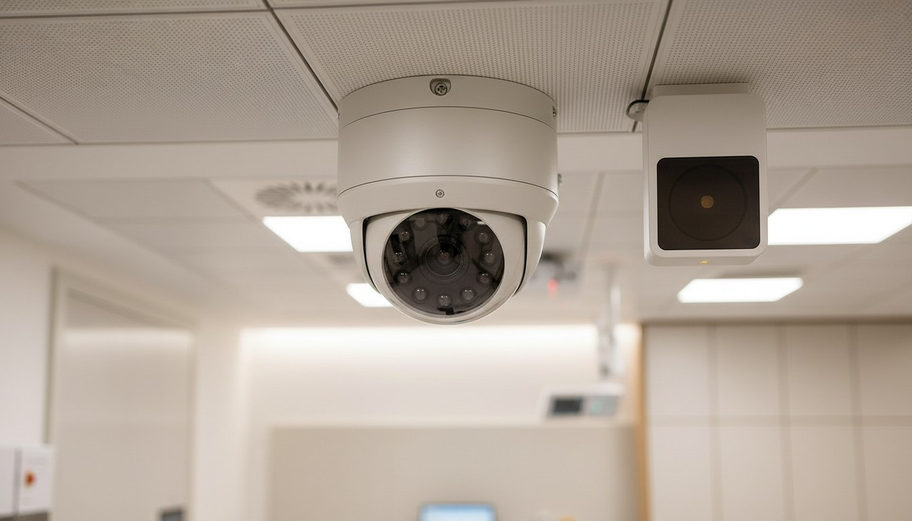
| Field | Data |
|---|---|
| Room Name | Radiotherapy Control Room |
| Room Code | RT-02 |
| Indicative Area | 18–24 m² |
| Service Hours | Match vault operating hours |
| Occupation | 2–3 RT Therapists (during treatment) + visiting physicist |
| Description | Houses the LINAC console cabinet, ARIA/MOSAIQ workstations, CCTV monitors, MDP panel, RJB panel, dosimetry reference equipment. Adjacent to vault with direct visual and intercom link. Staff operate all treatments from this room. |
| Strong Relationships | RT-01 Treatment Vault (direct adjacent) — RT-04 CT Sim (network link) |
| Element | Specification | Observation |
|---|---|---|
| Floor | ESD-safe vinyl or carpet tile — anti-static | Consistent with equipment room requirements |
| Walls | Painted plasterboard or block — no radiation shielding required | Cable management trunking at desk height |
| Ceiling | Lay-in acoustic tile — access panel above MDP/RJB location | Ceiling height ≥ 2,700 mm |
| Observation Window | Shielded leaded glass — direct view into vault (if no maze) | Minimum 15 mm Pb equivalent — per physicist calculation |
| Lighting | LED adjustable — low glare at workstation positions | Blackout blinds if window present |
| Description | Category | Qty | Observation |
|---|---|---|---|
| Operator Desk (L-shape) | Furniture | 1 | Ergonomic height — accommodate console + 2 additional monitors |
| Ergonomic Operator Chair | Furniture | 2–3 | Long-duration seating for treatment sessions |
| CCTV Monitor (patient view) | AV Equipment | 2 | Direct view of patient during beam delivery |
| Intercom Panel | Communication | 1 | Two-way vault ↔ control room |
| Description | QTY | ELE | HVAC | GAS / DRN | DATA / BMS | Power Observation |
|---|---|---|---|---|---|---|
| LINAC Console Cabinet | 1 | Yes | 1.1 kW heat load | No | Oncology LAN — static IP | Single-phase 208–240V, 2 kVA |
| MDP (Mains Disconnect Panel) | 1 | Yes | No | No | BMS interlock | Within sight + ≤3 m of console — surface/semi-recessed, 82 kg |
| RJB (Remote Junction Box) | 1 | Yes | No | No | Interlock circuit | Wall-mounted, service access maintained — 22.5 kg |
| OIS Workstation (ARIA/MOSAIQ) | 2 | Yes | No | No | Oncology domain LAN — 1 Gbps | Standard 230V — UPS protected |
| CCTV Monitor Array | 1 set | Yes | No | No | CCTV LAN | PoE or standard 230V |
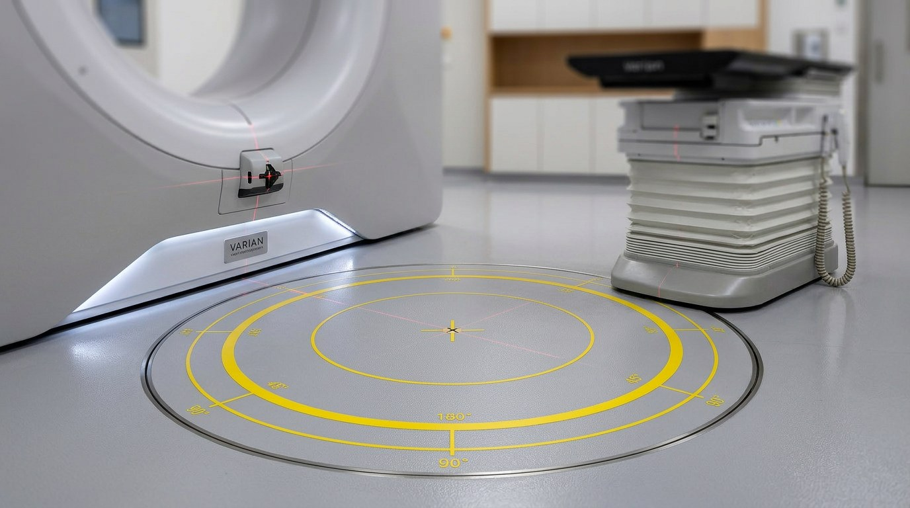
| Field | Data |
|---|---|
| Room Name | Patient Waiting Area — Pre-Treatment |
| Room Code | RT-03 |
| Indicative Area | 20–28 m² |
| Occupation | 6–10 patients simultaneously (daily fractionated treatment) |
| Description | Patient waiting area immediately adjacent to vault entry. Patients arrive already changed and ready for treatment. Calming environment — consider acoustic comfort, natural or simulated light, distraction art or displays. Companion seating included. |
| Strong Relationships | RT-08 Changing (upstream) — RT-01 Vault Entry (downstream) |
| Element | Specification | Observation |
|---|---|---|
| Floor | Vinyl or porcelain tile — easy clean, slip-resistant | Warm neutral tones — calming patient environment |
| Walls | Painted gypsum — feature wall with artwork or projected nature imagery | Acoustic panels to reduce reverberation |
| Ceiling | Acoustic tile or plasterboard — sky/nature imagery possible | Indirect lighting preferred — reduce clinical feeling |
| Lighting | Warm white LED 2,700–3,000K — dimmable. No harsh overhead fluorescent. | Patient anxiety reduction — biophilic lighting strategy |
| Description | Category | Qty | Observation |
|---|---|---|---|
| Patient Chair (upholstered) | Furniture | 8–10 | Comfortable — suitable for frail oncology patients |
| Companion Seating | Furniture | 4 | Adjacent to patient chairs |
| Info Display / Digital Screen | AV Equipment | 1 | Patient call system + appointment info |
| Patient Call System | Communication | 1 | Link to control room |
| Description | QTY | ELE | HVAC | GAS / DRN | DATA / BMS | Observation |
|---|---|---|---|---|---|---|
| Patient Call Display | 1 | Yes | No | No | BMS / Nurse Call | 230V — wall mounted |
| HVAC (comfort cooling) | 1 sys | Yes | 22–24°C / 4–6 ACH | No | BMS | Patient comfort — independent zone |
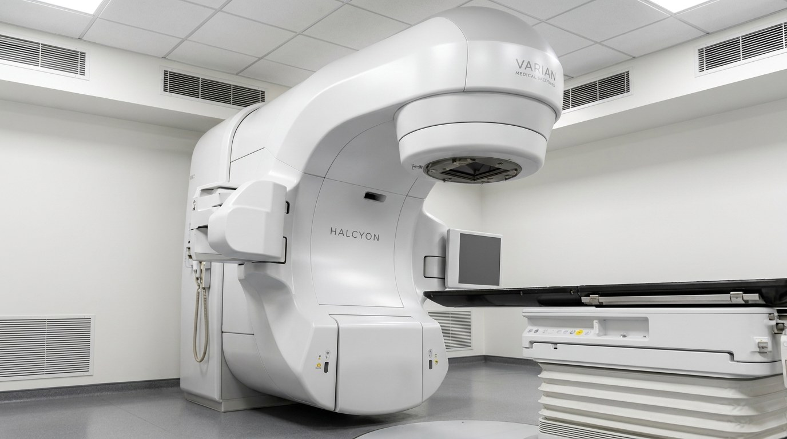
| Field | Data |
|---|---|
| Room Name | CT Simulation Room |
| Room Code | RT-04 |
| Indicative Area | 28–35 m² (scanner room + control alcove) |
| Occupation | 1 Patient + 2 RT Therapists / dosimetrist |
| Description | Large-bore CT scanner (≥80 cm bore) dedicated to radiotherapy treatment planning. Patient simulated in treatment position using immobilisation devices. Laser alignment system integrated. DICOM data transmitted directly to treatment planning system. |
| Acoustic Insulation | Sound attenuation between scanner room and control alcove — shielded screen |
| Strong Relationships | RT-05 Treatment Planning (DICOM link) — RT-07 Mould Room (immobilisation supply) |
| Element | Specification | Observation |
|---|---|---|
| Floor | Smooth vinyl — ESD rated — continuous from scanner room to control alcove | No floor pit required (CT sim couch uses rails) |
| Walls | Leaded gypsum or structural shielding per radiation physicist design | CT radiation — lower shielding than LINAC vault but required |
| Ceiling | Acoustic tile with radiation-shielding provision if required | Physicist to calculate above-ceiling shielding requirement |
| Lighting | Dimmable LED — laser alignment visible requires low ambient light | Red/green laser alignment system — ambient light control critical |
| Description | Category | Qty | Observation |
|---|---|---|---|
| Large-Bore CT Scanner (≥80 cm) | Major Equipment | 1 | RT-dedicated — not shared with diagnostic CT if possible |
| Flat-Top RT Treatment Couch | Fixed Equipment | 1 | Interchangeable with LINAC couch top — positional reproducibility |
| Laser Positioning System (3-axis) | Fixed Equipment | 1 set | Ceiling + side wall lasers — matches LINAC vault setup |
| CT Console Workstation | IT Equipment | 1 | In control alcove — DICOM export to TPS |
| Description | QTY | ELE | HVAC / Cooling | GAS / DRN | DATA / BMS | Observation |
|---|---|---|---|---|---|---|
| CT Scanner (large-bore) | 1 | Yes | Chilled water — vendor spec | Drain | DICOM / PACS / TPS | 3-phase — per vendor planning guide |
| Laser Positioning System | 1 set | Yes | No | No | BMS | Low voltage — wall/ceiling conduit |
| HVAC | 1 sys | Yes | 20–22°C / 6 ACH | No | BMS | Patient comfort + equipment cooling |
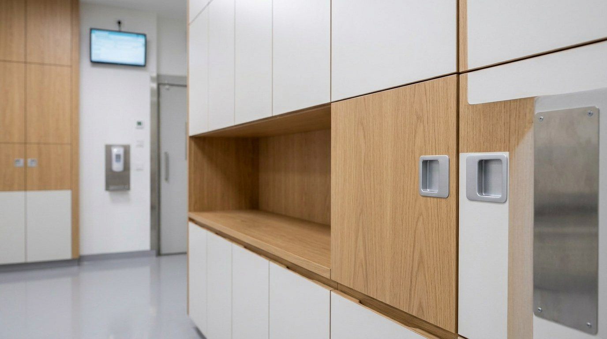
| Field | Data |
|---|---|
| Room Name | Radiotherapy Treatment Planning Room |
| Room Code | RT-05 |
| Indicative Area | 18–24 m² |
| Occupation | 2–4 Dosimetrists / Medical Physicists |
| Description | Workroom housing Treatment Planning System (TPS) workstations — Monaco (Elekta) or Eclipse (Varian). Dosimetrists delineate target volumes, define beam parameters, and calculate dose distributions. High-performance computing workstations with dual-screen displays. |
| Strong Relationships | RT-04 CT Sim (DICOM import) — RT-06 Physics QA (plan transfer for verification) |
| Element | Specification | Observation |
|---|---|---|
| Floor | Carpet tile or vinyl — anti-static | Acoustic comfort for focused work environment |
| Walls | Painted gypsum — screen blackout blind if windows present | Dual-monitor workstations require low ambient glare |
| Lighting | Dimmable LED — task lighting at workstations. Target 300 lux at desk. | Avoid glare on monitors — indirect lighting preferred |
| Description | Category | Qty | Observation |
|---|---|---|---|
| TPS Workstation (high-performance) | IT Equipment | 3–4 | Monaco / Eclipse — GPU-accelerated, dual 24" monitor minimum |
| Ergonomic Desk + Chair | Furniture | 3–4 sets | Adjustable height — long sessions |
| Server/UPS Rack | IT Equipment | 1 | In-room or adjacent server room — UPS mandatory |
| Description | QTY | ELE | HVAC | GAS / DRN | DATA / BMS | Observation |
|---|---|---|---|---|---|---|
| TPS Workstations | 3–4 | Yes | Supplemental cooling if server rack in room | No | Oncology LAN — 1 Gbps — DICOM | UPS protected — 230V single phase |
| HVAC (office comfort) | 1 sys | Yes | 21–23°C / 4 ACH | No | BMS | Server heat load — supplement with split unit if needed |
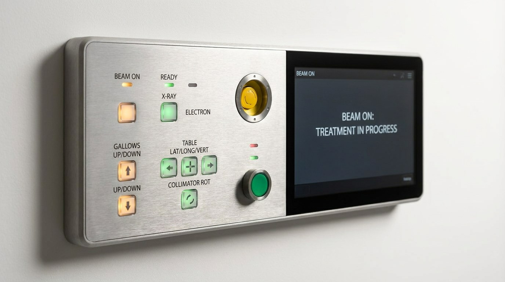
| Field | Data |
|---|---|
| Room Name | Medical Physics & QA Room |
| Room Code | RT-06 |
| Indicative Area | 16–20 m² |
| Occupation | 1–2 Medical Physicists |
| Description | Physics workroom for plan verification, patient-specific QA, machine QA (daily, monthly, annual), and dosimetry equipment storage. Houses ion chambers, electrometers, phantom equipment, ArcCheck/MatriXX arrays and DailyQA device. Access to vault for in-room measurements. |
| Strong Relationships | RT-05 Planning (plan import for verification) — RT-01 Vault (physics measurements access) |
| Element | Specification | Observation |
|---|---|---|
| Floor | Vinyl — easy clean for equipment staging | Benchtop access around perimeter |
| Walls | Painted gypsum — shelving for dosimetry equipment | Adequate storage for phantom equipment (bulky) |
| Worktop | Chemical-resistant laminate — 900 mm height workbench | Ion chamber calibration requires stable flat surface |
| Description | Category | Qty | Observation |
|---|---|---|---|
| Physics Workstation | IT Equipment | 1–2 | Plan verification software — RayStation / MPC / SNC Patient |
| Perimeter Workbench | Furniture | Linear m | 900 mm height — chemical resistant — 3-phase power strip |
| Equipment Storage Shelving | Furniture | 1 set | Open shelf for phantom storage (ArcCheck, ion chamber phantom) |
| DailyQA Device Storage | Equipment | 1 | Daily QA device (Sun Nuclear or equivalent) — transport to vault daily |
| Description | QTY | ELE | HVAC | GAS / DRN | DATA / BMS | Observation |
|---|---|---|---|---|---|---|
| Physics Workstations | 2 | Yes | No | No | Oncology LAN — DICOM | 230V UPS protected |
| Power Strip / 3-phase outlet | 2 | Yes | No | No | No | Benchtop — electrometer and measurement equipment |
| HVAC | 1 sys | Yes | 21–23°C / 4 ACH | No | BMS | Temperature stability important for ion chamber measurements |
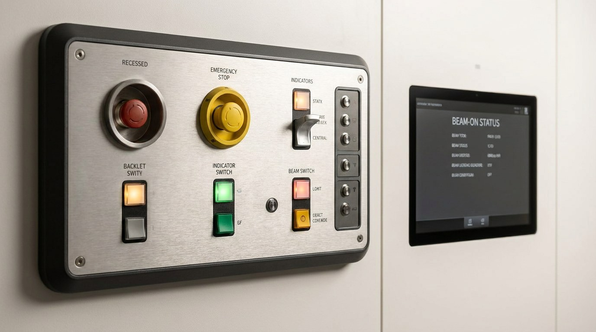
| Field | Data |
|---|---|
| Room Name | Mould Room — Immobilisation Laboratory |
| Room Code | RT-07 |
| Indicative Area | 14–18 m² |
| Occupation | 1–2 RT Therapists |
| Description | Fabrication and storage of patient immobilisation devices — thermoplastic shells (head, neck, thorax), vacuum bags, bite blocks, and customised bolus materials. Hot water bath for thermoplastic forming. Ventilation required for thermoplastic fumes. Storage racks for patient-labelled devices. |
| Strong Relationships | RT-04 CT Sim (device supply) — RT-01 Vault (device transfer to treatment) |
| Element | Specification | Observation |
|---|---|---|
| Floor | Vinyl — slip-resistant — water-tolerant (hot water bath spills) | Coving to walls minimum 100 mm |
| Walls | Painted block or tiled to splash-back height (1,200 mm) at sink | Thermoplastic fume extraction — wall exhaust grille |
| Worktop | Chemical-resistant — 900 mm height with sink | Sink with hot/cold water — thermoplastic bath filling |
| Ventilation | Enhanced local exhaust ventilation (LEV) at forming bench | Thermoplastic fumes — COSHH compliance |
| Description | Category | Qty | Observation |
|---|---|---|---|
| Thermoplastic Hot Water Bath | Major Equipment | 1 | 70–75°C thermostatically controlled — 230V / plumbed |
| Device Storage Rack (floor) | Furniture | 2 | Patient-labelled device storage — masks + vacuum bags |
| Workbench | Furniture | Linear m | 900 mm height — chemical resistant |
| Sink (deep, clinical) | Plumbing | 1 | Hot/cold — for device rinsing and cooling |
| Description | QTY | ELE | HVAC | GAS / DRN | DATA / BMS | Observation |
|---|---|---|---|---|---|---|
| Thermoplastic Hot Water Bath | 1 | Yes | No | HW/CW + drain | No | 230V / 2 kW — thermostatically controlled |
| Local Exhaust Ventilation | 1 | Yes | Dedicated LEV extract | No | BMS extract fan | Minimum 10 ACH local extract at forming bench |
| Sink / Plumbing | 1 | No | No | HW + CW + drain | No | Clinical sink — isolation valve |
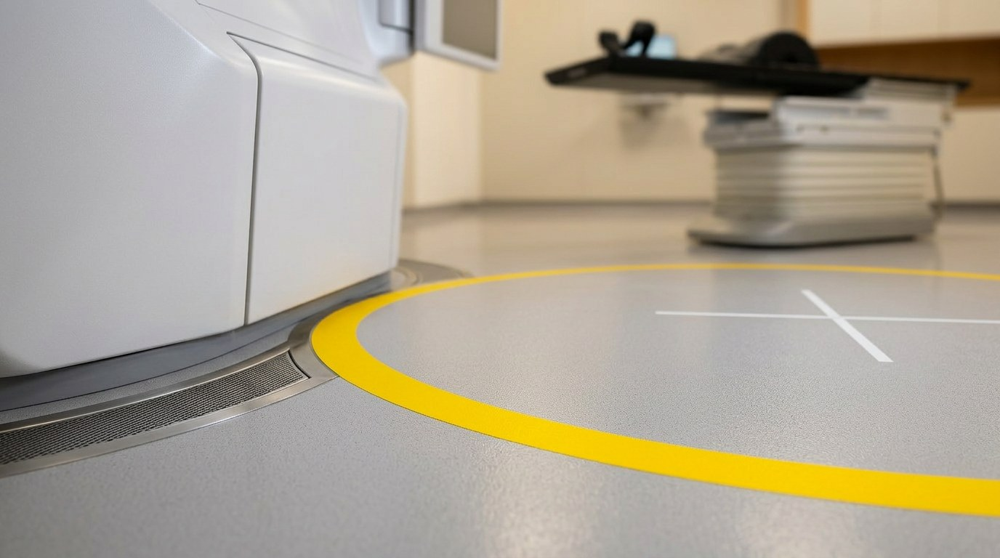
| Field | Data |
|---|---|
| Room Name | Patient Changing & Preparation Area |
| Room Code | RT-08 |
| Indicative Area | 10–14 m² (2 cubicles minimum) |
| Occupation | 2–4 Patients simultaneously |
| Description | Private changing cubicles for patients to change into gowns prior to daily treatment. Lockers for clothing and personal items. Accessible cubicle mandatory for wheelchair users and patients with reduced mobility (common in frail oncology population). Direct link to pre-treatment waiting area. |
| Strong Relationships | RT-03 Patient Waiting (downstream) — Main Department Reception (upstream) |
| Element | Specification | Observation |
|---|---|---|
| Floor | Non-slip vinyl — accessible drainage if required | Accessible cubicle: turning circle ≥1,500 mm diameter |
| Cubicle Partitions | Full-height privacy screens — lockable cubicle door | Patient dignity — no gaps at base or top |
| Lighting | LED warm white — 200 lux minimum in cubicle | Dimmable preferred — patient comfort |
| Lockers | Coin-return or key lockers | Secure clothing storage during treatment session |
| Description | Category | Qty | Observation |
|---|---|---|---|
| Changing Cubicle (standard) | Fixed | 2 | Min 1,200×1,200 mm — hook + seat + mirror |
| Changing Cubicle (accessible) | Fixed | 1 | Min 1,800×2,000 mm — grab rails + fold-down seat + alarm pull |
| Patient Locker Bank | Furniture | 6–8 units | Coin-return or RFID key — clothing + valuables |
| Emergency Pull Cord / Alarm | Safety | Per cubicle | Linked to nurse call system — frail oncology patients |
| Description | QTY | ELE | HVAC | GAS / DRN | DATA / BMS | Observation |
|---|---|---|---|---|---|---|
| Emergency Pull Cord Alarm | 3 | Yes | No | No | Nurse call BMS | Each cubicle — link to control room / staff station |
| HVAC (comfort) | 1 sys | Yes | 22–24°C / 4 ACH | No | BMS | Warm environment — patients partially undressed |
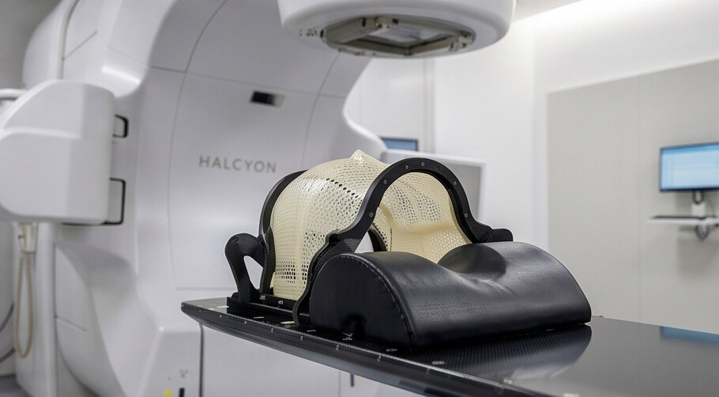
| Field | Data |
|---|---|
| Room Name | RT Staff Room & Dosimetry Administration Office |
| Room Code | RT-09 |
| Indicative Area | 14–18 m² |
| Occupation | 3–5 RT Therapists + Dosimetrists |
| Description | Combined staff break room and dosimetry administrative workroom. Houses personal dosimetry monitoring equipment, TLD/OSL reader, staff scheduling, treatment record filing, and OIS administrative functions. Staff rest area with kitchenette. |
| Strong Relationships | RT-02 Control Room — RT-05 Planning Room |
| Element | Specification | Observation |
|---|---|---|
| Floor | Vinyl or carpet tile — comfortable staff environment | Easy clean — kitchenette zone vinyl only |
| Walls | Painted gypsum — pin board / whiteboard on one wall | Treatment schedule display area |
| Kitchenette | Stainless steel sink + base units + wall cabinets | Staff rest — refrigerator + microwave provision |
| Lighting | LED 300 lux at desk — warm white for rest area | Dual zone — office bright / rest warm |
| Description | Category | Qty | Observation |
|---|---|---|---|
| Admin Workstation | IT Equipment | 2 | OIS administration — patient scheduling, record management |
| TLD / OSL Dosimetry Reader | Equipment | 1 | Personal dosimetry monitoring — staff radiation exposure records |
| Staff Locker | Furniture | 6–8 | Personal dosimetry badge storage + personal items |
| Rest Seating | Furniture | 4–6 | Break room function — comfortable seating |
| Kitchenette Unit | Fixed | 1 | Sink + base cabinets + wall cabinets + refrigerator space |
| Description | QTY | ELE | HVAC | GAS / DRN | DATA / BMS | Observation |
|---|---|---|---|---|---|---|
| Admin Workstations | 2 | Yes | No | No | Hospital LAN + OIS | 230V UPS — treatment record access |
| Sink / Kitchenette | 1 | Yes | No | CW + drain | No | Standard kitchen sink — isolation valve |
| HVAC | 1 sys | Yes | 21–23°C / 4 ACH | No | BMS | Standard office/staff comfort level |
This Functional Technical Brief is prepared at pre-programme stage using publicly available manufacturer planning documents, peer-reviewed literature, and UAE/GCC regulatory reference standards. All spatial dimensions, shielding thicknesses, equipment specifications, and area schedules are indicative only and subject to revision following formal site planning engagement with equipment vendor, Physicist of Record, and regulatory authority. No construction, procurement, or regulatory submission action shall be taken based solely on this document. Equipment selection (Elekta Harmony vs. Varian Halcyon) remains subject to client decision, clinical programme review, and capital cost assessment.